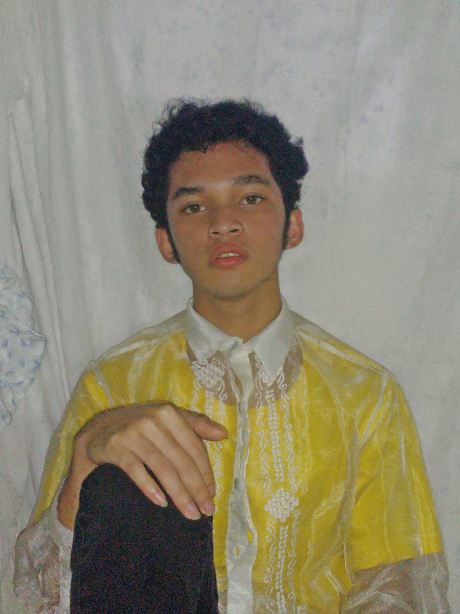

DREAM BIG. WORK HARD. FLEX HARDER.
Graduation marks a significant milestone in my journey, a momentous occasion that represents the culmination of years of hard work, dedication, and perseverance. As I stood there, clad in my cap and gown, I couldn’t help but reflect on the late nights spent studying, the friendships forged, and the knowledge gained. This achievement is not just a personal triumph but a beacon of hope and inspiration for those who have supported me along the way. It signifies the closing of one chapter and the exciting beginning of another, filled with endless possibilities and the promise of a bright future. Today, I celebrate not just a degree, but the transformation into a lifelong learner and a leader ready to make a meaningful impact in the world.
Like precious gemstones, my friends and family are invaluable treasures that illuminate my life with their warmth, understanding, and unwavering support. They are the confidants who listen patiently to my woes, offering a non-judgmental ear and a shoulder to cry on. When I celebrate triumphs, they become my loudest cheerleaders, sharing in my joy and amplifying my happiness. Through laughter echoing in shared spaces, adventures that forge memories etched in stone, and challenges that test our strength, my friends weave a tapestry of moments that enrich my life beyond measure. They remind me that I am never truly alone, even when the world feels vast and unyielding. Their unwavering presence is a constant source of joy, , and inspiration, making them an indispensable part of my journey. I am deeply grateful for the gift of their friendship, a treasure more precious than any gem.

I am an individual of many layers, each one a testament to the unique blend of qualities that define me. My essence is a tapestry woven from threads of resilience, compassion, and curiosity. I navigate life's complexities with a heart that seeks to understand and a mind that yearns to learn. My spirit is unyielding, not confined by the ordinary, but rather, it thrives on the extraordinary moments that life presents. I am a dreamer with feet firmly planted on the ground, a realist who dares to reach for the stars. In the grand narrative of existence, I am the author of my own story, a story that I write with intention, courage, and authenticity.
